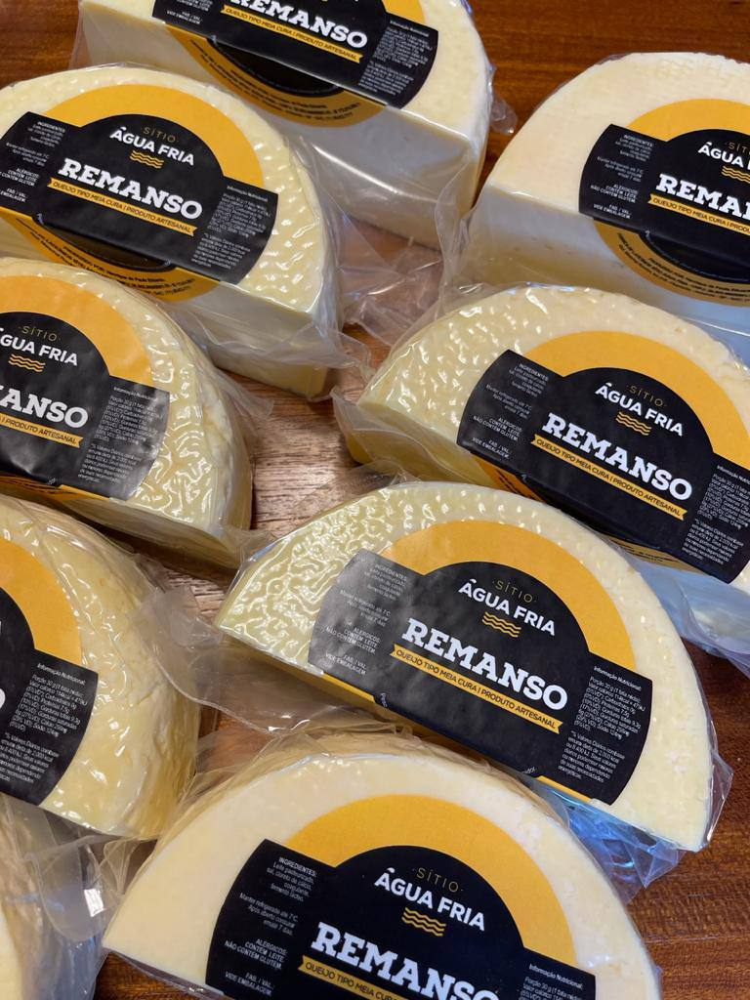
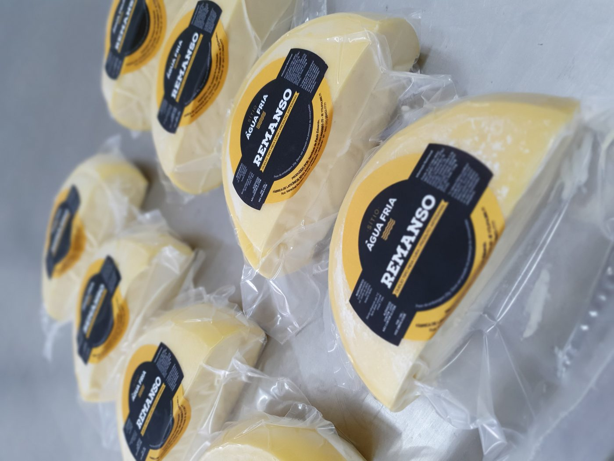
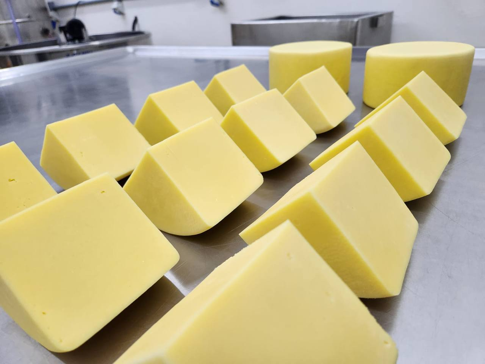
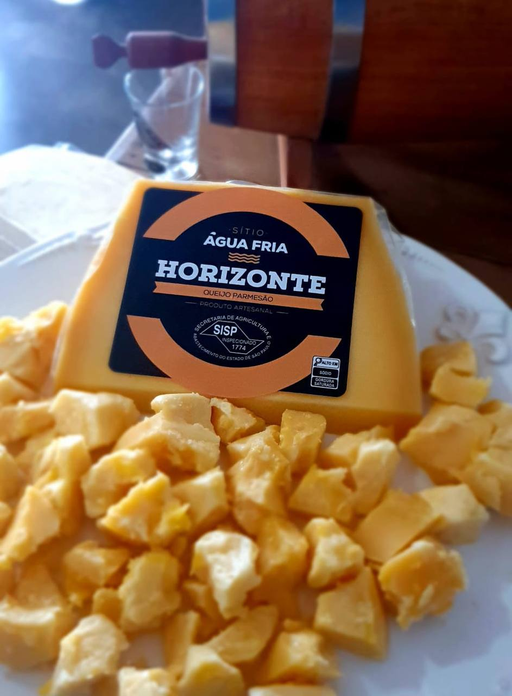

Laticínio artesanal · Pirambóia/SP · desde 2017
Queijo de leite 100% A2A2.
Leite do nosso rebanho, pasto verde irrigado o ano inteiro e produção em lotes pequenos, feita à mão no sítio. Entrega em Botucatu e região.

- Leite do próprio rebanho
- Pasto irrigado o ano inteiro
- Lotes pequenos, feitos à mão
- Inspeção SISP 1774

Nossa história
Um laticínio de família, desde 2017
O sítio fica na Rodovia Marechal Rondon, km 218, em Pirambóia/SP. Foi ali que o laticínio começou, em 2017, e é ali que tudo continua sendo feito.
Henrique cuida da produção — é ele quem faz cada peça. Raquel responde pela genética do rebanho, com produção de embriões feita no próprio sítio, e pelo comercial junto com o Gustavo.
Os nomes dos queijos vêm da paisagem daqui: Nascente, Poente, Remanso, Garoa, Brisa, Horizonte.
Rebanho 100% A2A2 e inspeção SISP — venda formal em todo o estado de São Paulo.
Produtos
Nossa linha, com nome de paisagem
Queijos de leite A2A2, do frescal ao parmesão curado. A disponibilidade muda conforme a cura e o lote da semana — pergunte no WhatsApp o que tem pronto.
-
Nascente
Minas frescal Produto artesanal -
Poente
Minas padrão Produto artesanal -
Remanso
Meia cura Produto artesanal -
Garoa
Mussarela Produto artesanal -
Brisa
Brie Produto artesanal -
Horizontinho
Queijo artesanal Produto artesanal -
Horizonte
Parmesão Produto artesanal -
Coalho
Queijo coalho Produto artesanal
Também sai da nossa cozinha
- Requeijão de corte
- Doce de leite 400g e 280g
- Iogurte natural 1L e 500ml
- Iogurte de morango 1L e 500ml
- Manteiga
Do pasto à genética
O que significa A2A2
A2A2 é o tipo de beta-caseína, a proteína do leite. Nosso rebanho é 100% A2A2, selecionado geneticamente para isso. Não é leite sem lactose e não prometemos efeito de cura — é uma proteína diferente, que muita gente relata digerir melhor.
- 01 · Rebanho
100% A2A2, selecionado geneticamente.
- 02 · Genética
Produção de embriões feita no próprio sítio.
- 03 · Pasto
Verde e irrigado o ano inteiro.
Da produção à mesa


Locais de venda
Onde comprar
A maior parte dos pedidos vem pelo WhatsApp e é entregue pessoalmente. Também estamos nestes pontos:
Entrega em Botucatu
Entrega pessoal, combinada por WhatsApp.
Padaria parceira em Botucatu
Nossos queijos na prateleira, toda semana.
Piracicaba
Braço de vendas na cidade, com entrega combinada.
No próprio sítio
Rodovia Marechal Rondon, km 218 — Pirambóia/SP. Avise antes pelo WhatsApp para separarmos o pedido.
Contato
Faça seu pedido
Manda mensagem com o que você procura e a gente responde com o que está pronto na semana.